Web de venta de viandas y gestión del comedor universitario de la UTN FRLP
Nombre del proyecto: Ticket
Descripción: Web para venta de viandas y gestión del comedor universitario de la UTN FRLP.
Tipo: Proyecto Institucional y de Extensión Universitaria (Secretaría de Asuntos Universitarios UTN FRLP)
Rol: Desarrollador Full-Stack
Fecha: Junio - Diciembre 2025
Tecnologías Usadas: PHP (CodeIgniter 3), HTML, JS, CSS, MySQL, Mercado Pago API
Colaboradores: Jorge Ronconi
Visitar la página Ver códigoEl proyecto se centró en la modernización y automatización del sistema de gestión de viandas y compras del comedor universitario de la UTN-FRLP. El desafío principal radicó en transformar un proceso de verificación de pagos que era completamente manual y propenso a errores, a un sistema totalmente automatizado mediante la integración de Mercado Pago. Esto era crucial para agilizar la recarga de saldo de los usuarios y garantizar la disponibilidad de las viandas.
El enfoque inicial consistió en analizar y reestructurar el backend existente para soportar la integración con la API de Mercado Pago, garantizando que cada pago se registrara instantáneamente como saldo en la cuenta del usuario. Paralelamente, se llevó a cabo una renovación completa del Frontend (UI/UX) para mejorar la navegabilidad y la experiencia de compra de viandas. El proceso de desarrollo se centró en la modularidad y la seguridad de las transacciones.
Implementamos una plataforma robusta que ofrece dos funciones principales: la compra ágil de viandas para los estudiantes y la automatización de pagos con Mercado Pago. Además, desarrollé y optimicé el Panel de Administración, una herramienta esencial para el personal del comedor. Este panel permite realizar tareas críticas como los cierres de caja diarios/semanales, el armado del listado de viandas disponibles, y el registro detallado de todos los movimientos de caja y transacciones. El resultado es un sistema moderno, eficiente y con trazabilidad completa de cada movimiento financiero y de inventario.
Sistema de pagos automatizado que acredita el saldo instantáneamente, eliminando la verificación manual.
Sistema completo para la selección y compra de menús diarios o semanales por parte de los estudiantes.
Herramientas para el personal del comedor: cierre de cajas, gestión de stock y reportes financieros.
Trazabilidad completa de transacciones y compras para usuarios y administradores.
Sistema automatizado para solicitar y procesar devoluciones de viandas no consumidas con reintegro.
Comunicación clara del estado de las compras y saldo disponible para mejorar la experiencia.
Integración total con Mercado Pago para acreditación instantánea.
Escalabilidad probada con alto flujo de transacciones mensuales.
Rediseño moderno enfocado en la rapidez de compra.
Acceso constante para la compra y reserva de viandas.
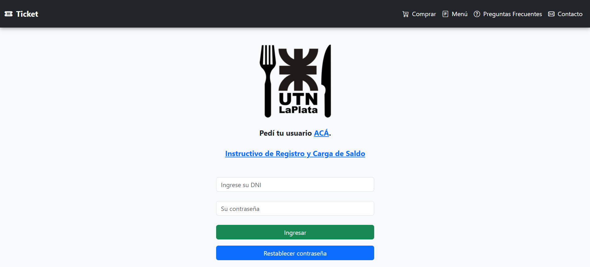
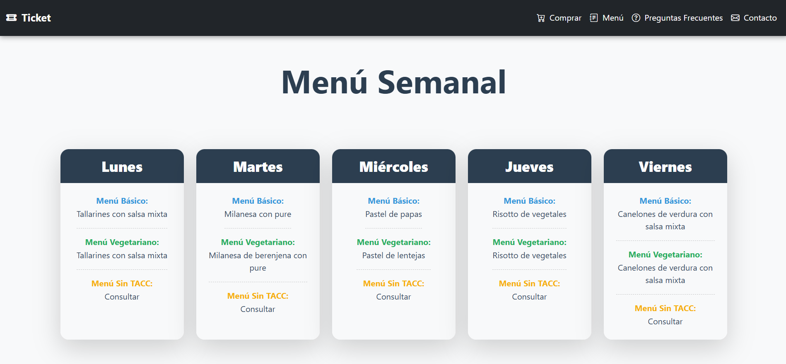
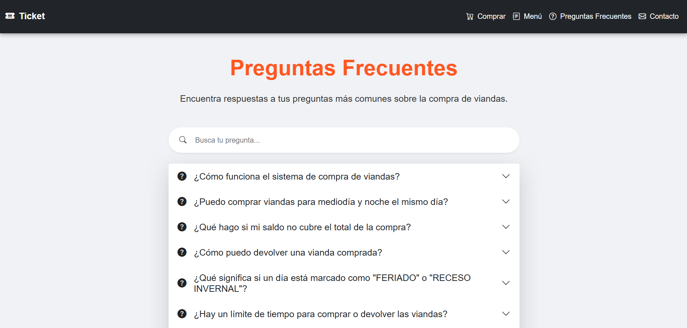
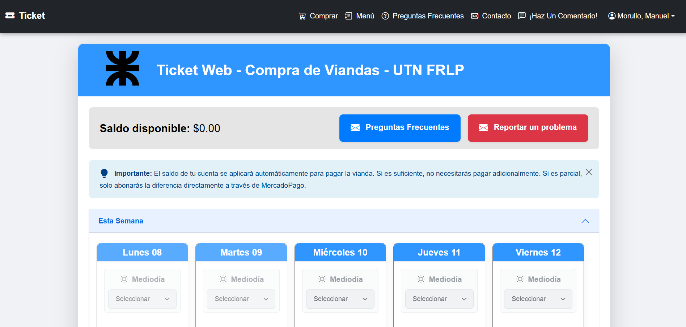
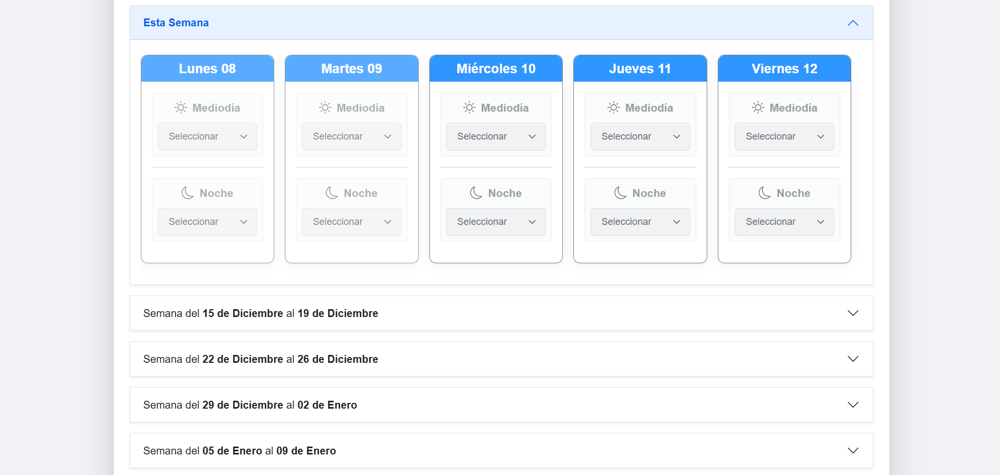
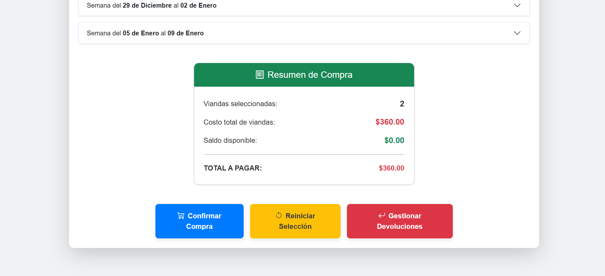
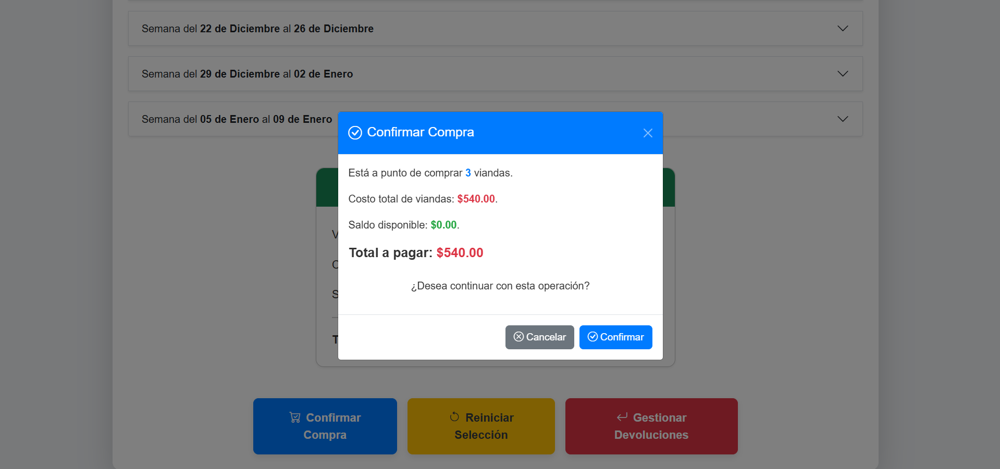
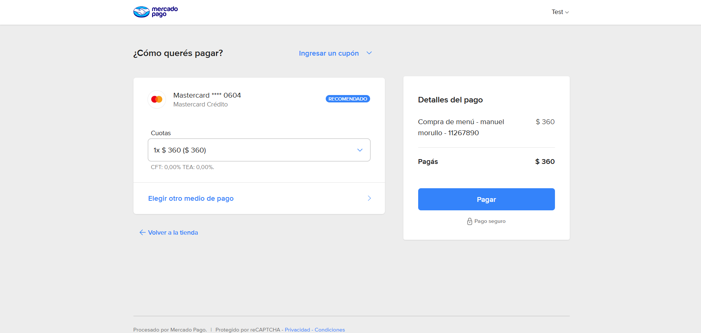
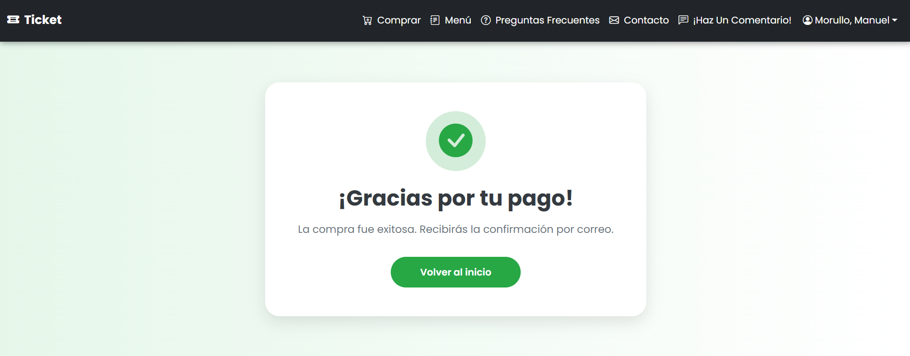
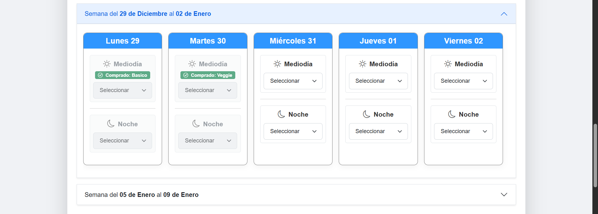
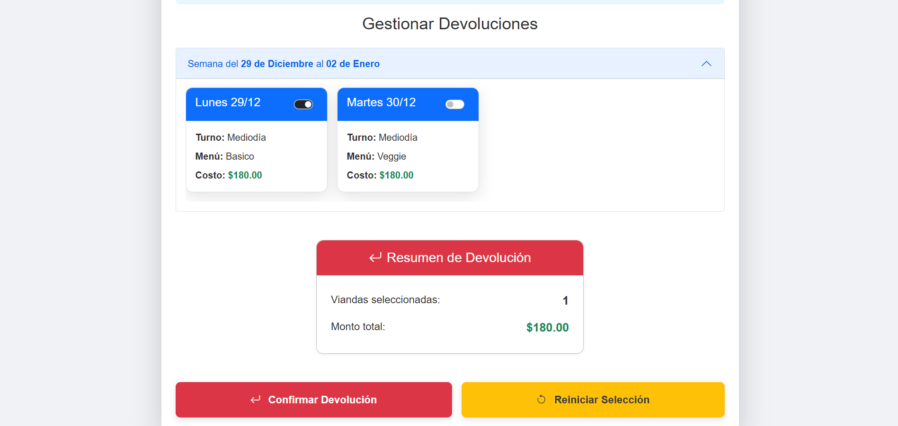
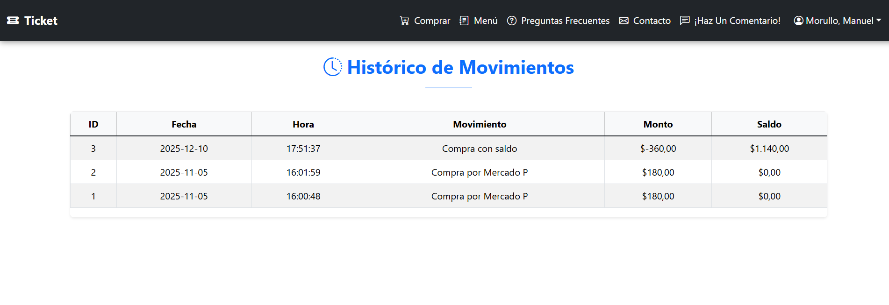